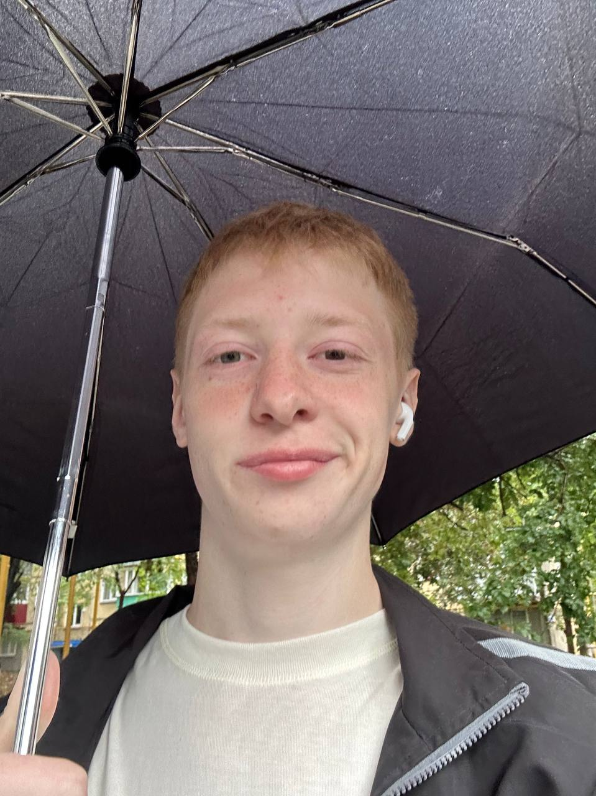
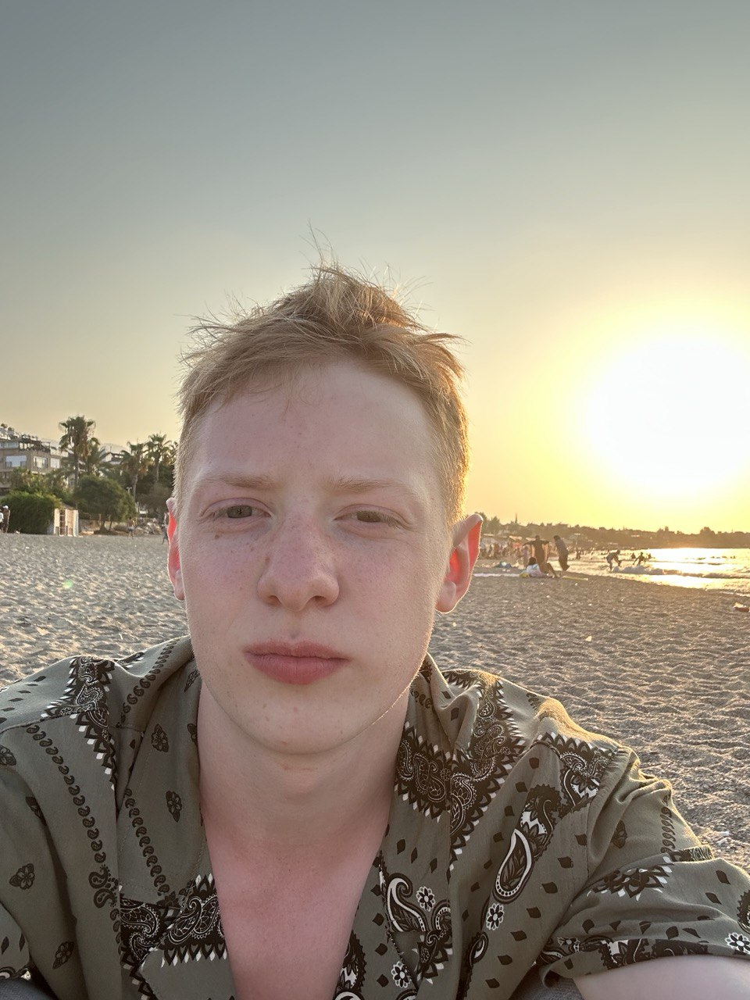

Студент ЮУрГУ, 18 лет
 Учусь в Южно-Уральском государственном университете (Национальный исследовательский университет), Челябинск.
Факультет экономики и управления, Информационные системы и технологии. Хочу начать работать с 1 курса, поэтому начинаю изучать различные способы заработка. В будущем хочу создать свой бизнес и , соответсвенно, интересную бизнес-идею, реализовав её с помощью различных знаний в смежных областях (как образования архитектора и строителя, только программирование и менеджмент). Знаю английский на уровне B2 - средне-продвинутый.
Предпочитаемый способ связи - telegram .